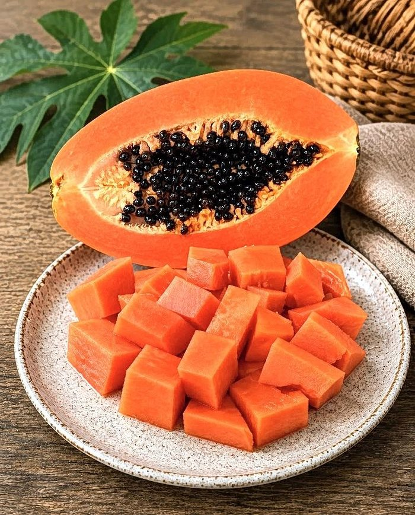
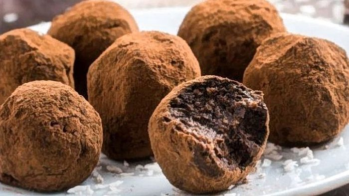
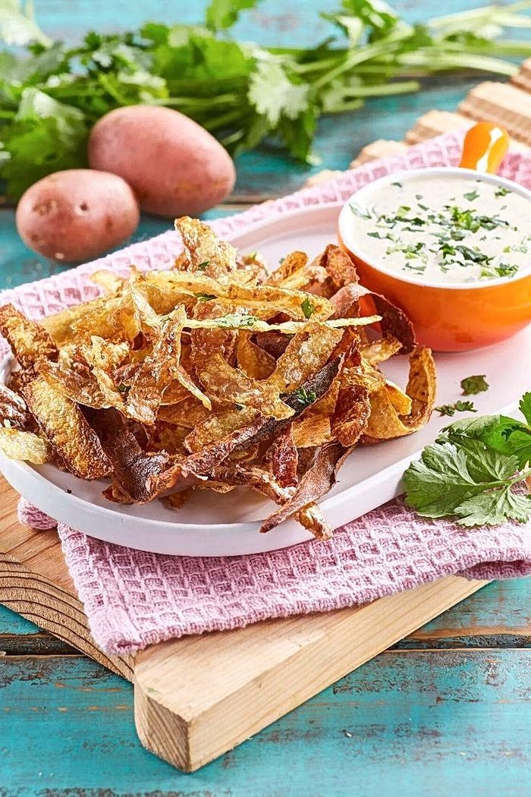
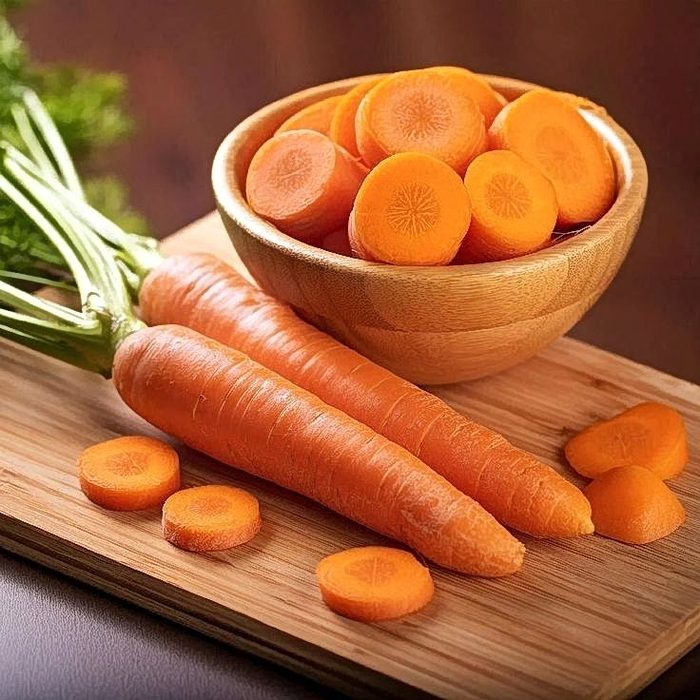
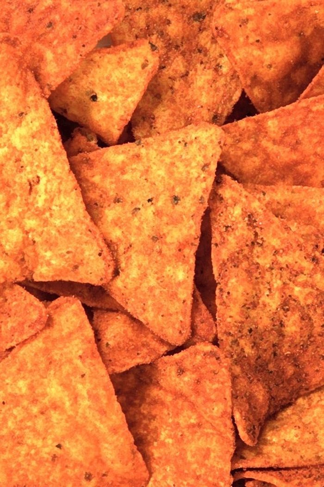
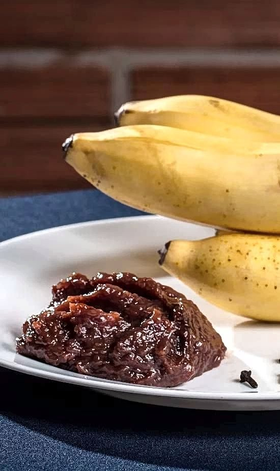
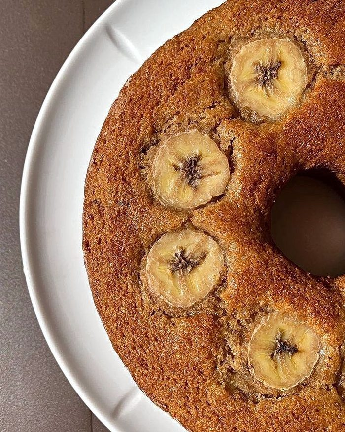
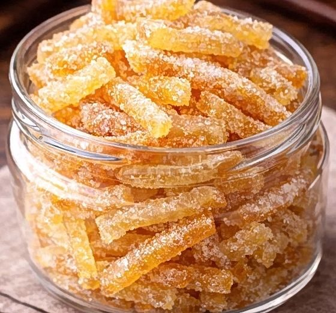
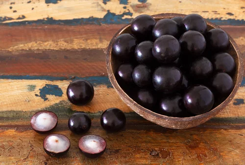

Receitas
Um prato para qualquer papo.
Receitas

Pimenta de Semente de Mamão

Brigadeiro de Banana

Chips de Casca de Batata

Patê de Talos e Folhas de Beterraba

Arroz de Doritos

Doce de Banana

Bolo de Banana

Bala de Laranja Cristalizada

Bolo de jabuticaba